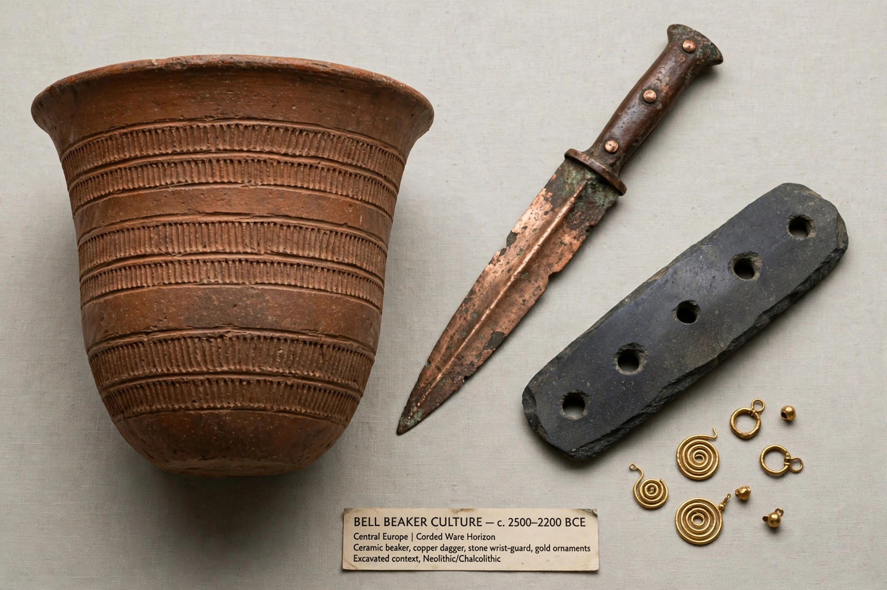

Bell Beaker culture
The Bell Beaker culture, also known as the Beaker culture, is an archaeological culture named after the inverted-bell beaker drinking vessel used at the beginning of the European Bronze Age. Arising from around 2800 BC, it spread across western and central Europe and parts of the Mediterranean, lasting until about 1800 BC in some regions.
| Bell Beaker culture | |
|---|---|
 | |
| Period | c. 2800–1800 BC |
| Region | Europe and NW Africa coasts |
| Named for | Inverted bell-shaped drinking vessels |
Material culture
The 'Beaker package' includes the distinctive beakers, copper daggers and awls, gold ornaments, V-perforated buttons, stone wrist-guards (archers' bracers) and early metalworking. Beakers are often interpreted as drinking vessels for beer or mead, linked to feasting and status. Burial was typically by single inhumation under round barrows, with men and women often placed on different sides, accompanied by grave goods.
Origins and genetics
Long debated as either migration or fashion diffusion, ancient DNA studies since 2018 show both: in Britain, Beaker arrival around 2450 BC coincided with replacement of roughly 90% of the population within centuries by groups carrying steppe-related ancestry related to the Corded Ware complex; in Iberia, where beakers may have originated, the genetic change was initially smaller and steppe ancestry (and Y-chromosome R1b lineages) spread later. The Beaker phenomenon is thus now viewed as regionally varied mixtures of movement and adoption, contributing substantially to the ancestry of later European populations.
See also
Recreated from memory for muse-webcrawl.